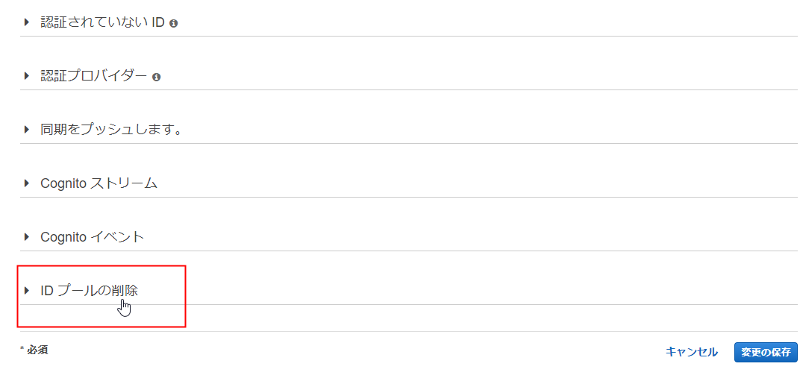

この実施は任意です。本日作成したアプリを残しておきたい方は、実施不要です。
すべて削除したい場合は、以下の手順を実施してください。
以下のバケットを削除します。
マネージメントコンソールで、サービス > S3 を選択します。対象となるバケットを選択して、バケットを削除する ボタンをクリックしてください。(バケット名 のリンクをクリックするとバケットの詳細画面に遷移するので、リンク部分以外をクリックして選択してください)
バケットを削除する ダイアログで、バケット名を入力する に削除対象のバケット名を入力して 確認 ボタンをクリックします。
マネージメントコンソールで、サービス > CloudFormation を選択します。
スタックの名前 が DevAWSomePhotoAPIStack のものを選択し、アクション > スタックの削除 をクリックします。
スタックの削除 画面で、はい、削除する をクリックします。
状況 が DELETE_IN_PROGRESS に変わります。右上の更新ボタン(矢印が丸まったアイコン) をクリックして状況が変化したか確認できます。削除が完了すると行が無くなります。
スタックを削除すると、スタックに含まれるすべてのリソースが削除されます。
マネージメントコンソールで、サービス > Cognito を選択します。
ID プールの管理 ボタンをクリックします。
DevAWSomeIDPool をクリックします。
右上の ID プールの編集 をクリックします。
画面左下の IDプールの削除 をクリックします。

IDプールの削除 ボタンが表示さるので、クリックします。
IDプールの削除 画面で、プールの削除 ボタンをクリックします。
マネージメントコンソールで、サービス > Cognito を選択します。
ユーザプールの管理 ボタンをクリックします。
devawsome-user-pool をクリックします。
画面右上の プールの削除 ボタンをクリックします。
ユーザプールの削除 画面で delete と入力して プールの削除 ボタンをクリックします。
サービス > Lambda をクリックします。
Cognito の ユーザプール を削除した直後の画面には、サービス メニューが表示されていないので、画面左上の AWS アイコンをクリックして、マネージメントコンソールのトップ画面に遷移してから操作してください。
DevAWSomeImageLambda の左側にチェックを入れて、アクション > 削除 をクリックします。
DevAWSomeImageLambda 関数を削除 画面で、削除 ボタンをクリックします。
サービス > DynamoDB をクリックします。
左側のナビゲーションペインで、テーブル をクリックします。
devawsome-photos を選択して、テーブルの削除 ボタンをクリックします。
テーブルの削除 画面で、デフォルトのまま、削除 ボタンをクリックします。
サービス > IAM をクリックします。
左側のナビゲーションペインで、ロール をクリックします。
以下の ロール名 の左のチェックボックスにチェックを入れて、ロールの削除 ボタンをクリックします。
ロールの削除 画面で、はい、削除します ボタンをクリックします。（押せるようになるまで数秒かかります。)
サービス > CloudWatch をクリックします。
ナビゲーションペインで、ログ をクリックします。
以下のロググループを削除します。
ロググループにチェックを入れて、アクション > ロググループの削除 をクリックします。
ロググループの削除 で、はい、削除します をクリックします。
サービス > Cloud9 をクリックします。
DevAWSomeDay のリンクをクリックして、次の画面右上の Delete ボタンをクリックします。(IDE が一つしかない場合はデフォルトで選択状態になっていますので、そのままDelete ボタンをクリックしてください。）
Delete DevAWSomeDay 画面で、Delete と入力して、Delete ボタンをクリックします。
ルートアカウントでログインしなおします。マネージメントコンソールの右上の DevAWSomeUser @ XXX をクリックします。
サインアウト をクリックします。
画面右上の コンソールへログイン をクリックします。
ルートアカウントのサインイン画面が表示されない場合は、ルートアカウント認証情報を使用してサインイン リンクをクリックします。
ルートアカウントでサインインします。(もしくは他のIAM ユーザでログインしてもかまいませんが、IAM の操作権限を持っている必要があります。)
サービス > IAM を選択します。
ナビゲーションペインで、ユーザ を選択します。
DevAWSomeUser にチェックを入れて、ユーザの削除 ボタンをクリックします。
ユーザの削除 画面で、以下の部分にチェックを入れて、はい、削除します をクリックします。
1人以上のユーザーが最近 AWS にアクセスしました。これらを削除すると実行中のシステムに影響する可能性があります。これらのユーザーを削除することを確認し、チェックボックスをオンにしてください。
ポリシー を選択します。
検索 入力欄に DevAWSomePolicy と入力します。
表示されたポリシーにチェックを入れて、ポリシーアクション > 削除 をクリックします。
ポリシーの削除 画面で、削除 ボタンをクリックします。
以上で、ラボで生成したすべてのリソースが削除されました。